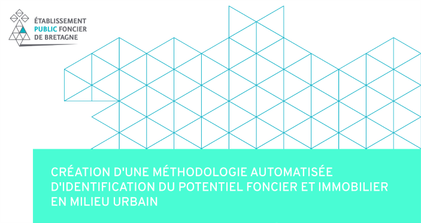
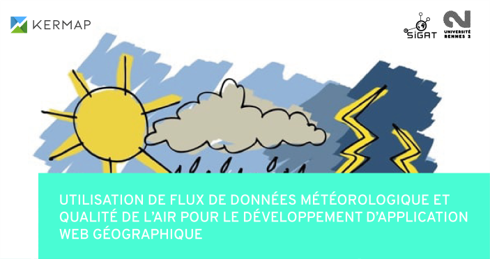
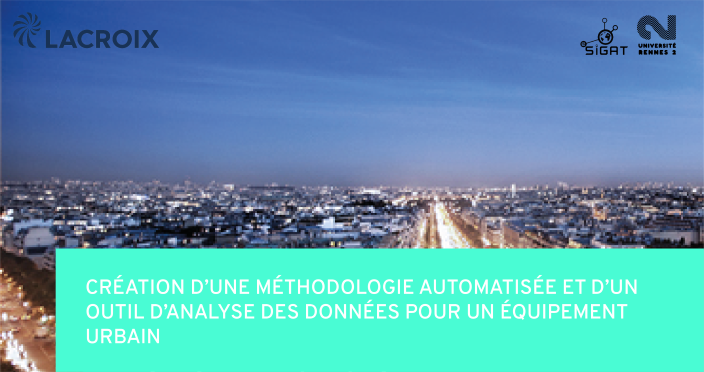
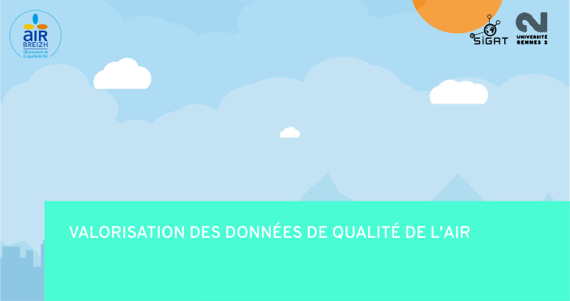
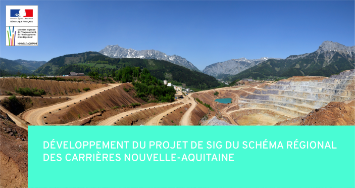
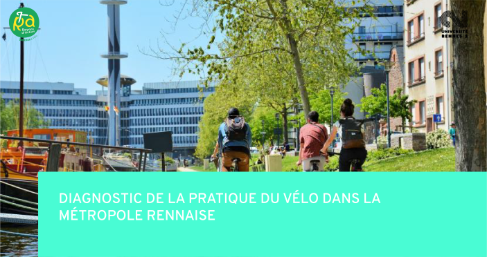
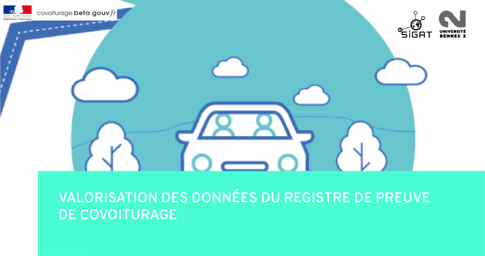

Dans le cadre de mon stage de fin d'étude à l'Etablissement Public Foncier de Bretagne (EPFB), ma mission principale était de créer une chaîne de traitement automatisée, permettant d'identifier les gisements fonciers et immobiliers avec un fort potentiel d'aménagement ou de densification. Les résultats de cette méthodologie devront être disponibles pour les collectivités territoriales avec un outil de visualisation cartographique.
Mon stage à l'EPF Bretagne n'étant pas terminé, je ne peux pas encore vous proposer de documents détaillant le projet.
#FME #Données foncières

Lors d'un projet professionnel en partenariat avec l'entreprise Kermap, l'objectif était de créer une application cartographique comportant des indicateurs météorologiques, climatiques et de qualité de l'air, provenant de flux de données en temps réel.
Pour en savoir plus, vous pouvez tester l'application et lire la documentation associée.
#Python #HTML/CSS/JavaScript #API #MapboxGL #C3js

Ce projet, pour le compte du groupe Lacroix, consistait à créer une méthodologie automatisée permettant de déterminer un équipement urbain, à partir de données OpenStreetMap. Ainsi que de réaliser un outil d'analyse de ces données à des fins marketings et commerciales.
Pour des questions de confidentialité, je ne peux malheureusement, pas vous montrer les résultats de ce projet.
#Modeleur graphique QGIS #HTML/CSS/JavaScript #OSM #API Overpass #MapboxGL

Dans le cadre d'un partenariat avec l'association AirBreizh, l'objectif était de proposer des solutions techniques de valorisation graphique et cartographique des données de modélisation urbaine et régionale à destination des collectivités territoriales et du grand public.
Pour en savoir plus, vous pouvez consulter le rapport final ainsi que le support de présentation de la restitution, du 15 janvier 2021.
#Expertise #Conseil

Lors de mon stage à la DREAL Nouvelle-Aquitaine, j'avais pour principale mission de réaliser le projet SIG du Schéma Régional des Carrières de Nouvelle-Aquitaine. L'ambition de ce schéma était de déterminer des Zones de Développement Préférentiel des Carrières (ZDPC) selon une multitude de critères.
Pour en savoir plus, vous pouvez consulter le rapport final ainsi que ces annexes.
#QGIS #Données environnementales

Pour un projet en partenariat avec l'association rennaise Rayons d'Action. Nous avons dû identifier des freins à la pratique du vélo, repérer des transformations à apporter sur des trajets avec de fortes circulations à vélo et présenter en argumentant des aménagements à prévoir. Ce diagnostic a permis à l'association de proposer des solutions d'aménagements devant les élus de la métropole.
Pour en savoir plus, vous pouvez consulter le diagnostic de la pratique du vélo dans la métropole et le plan d'action.
#Diagnostic #OpenData #OSM #INSEE

Ce projet que nous avons réalisé pour la start-up d'Etat "Covoiturage.Beta.Gouv" avait pour but d'explorer les données du registre de preuve de covoiturage et de les analyser pour en sortir des dynamiques spatiales de covoiturage pendulaire, sur trois territoires représentatifs de la France.
Pour en savoir plus, vous pouvez consulter le rapport final ainsi que le support de présentation de la restitution des ateliers SIGAT de 2020.
#QGIS #R #Exploration #Données transport